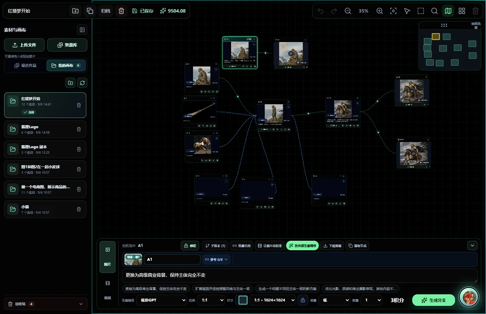
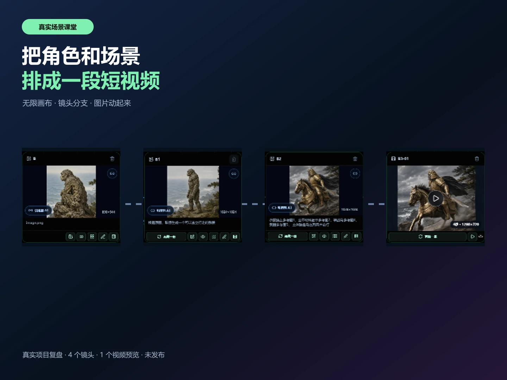
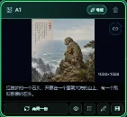
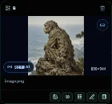
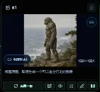
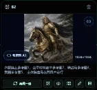
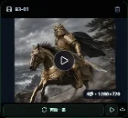

真实画布 · 真实分支 · 真实视频把角色和场景
把角色和场景
排成一段短视频
这次不把图片散落在文件夹里。我们复盘一个真实的 Pic365 无限画布项目，把开篇、角色、动作和视频结果放在同一张画布中。
14 个实体素材与结果同屏4 个镜头形成故事节奏4 秒视频从选中图片继续生成

01 · 客户问题
镜头素材很多，但关系散、版本乱
适合短视频编导、内容运营和需要多人复核镜头的创作者。目标不是单独生成一张图，而是把角色、场景、图片分支和视频结果放在同一条可追溯链路里。
常见问题素材散落，分支来源难追踪适用用户编导、运营、分镜创作者完成标准四个镜头关系清楚且可回查
02 · 为什么用画布
先理清镜头关系，再决定哪张图动起来
无限画布保留素材、参考关系、图片分支和视频分支。编导可以看清每个镜头从哪里来，而不是反复下载、改名和寻找版本。
角色实体可锁定生成关系可追溯分支可并排比较图片可直接转视频
02 · 真实操作过程
五张截图都来自 Pic365 当前真实界面
点击步骤，对照项目入口、完整画布、角色锁定、视频设置和最终播放窗口。
03 · 真实节点关系
严格按画布分支展示，不把不同分支拼成连续镜头
下面直接使用项目中的节点截图，节点名称、父子关系和视频入口均与真实画布保持一致。
开篇支线
A1 图片 → A2 视频
角色支线
B 素材 → B1 角色 → B2 骑马画面 → B3-01 视频



04 · 图片动起来
选中关键画面，继续生成视频
本次真实视频
画布中的骑马镜头被继续生成成 4 秒、1280×720 视频。提示词补充主体动作和镜头要求，原图片仍作为视觉起点。
- 先确认静态镜头主体和构图。
- 点击节点上的“让图片动起来”。
- 描述动作、镜头和氛围。
- 生成后在画布直接播放和下载。
05 · 避坑提示
分镜不是把图片随便摆在一起
01先确定角色、场景、道具各自职责，再建立引用关系。
02锁定已经确认的关键实体，避免整理画布时误移动或删除。
03每个镜头只表达一个主要动作，分支过多时及时命名和排列。
04先检查静态图的脸、手、服装和道具，再投入视频生成。
下一步
进入 Pic365 无限画布把你的镜头关系放进无限画布
进入 Pic365 无限画布，整理角色、场景和镜头分支，再选择确认后的画面生成视频。